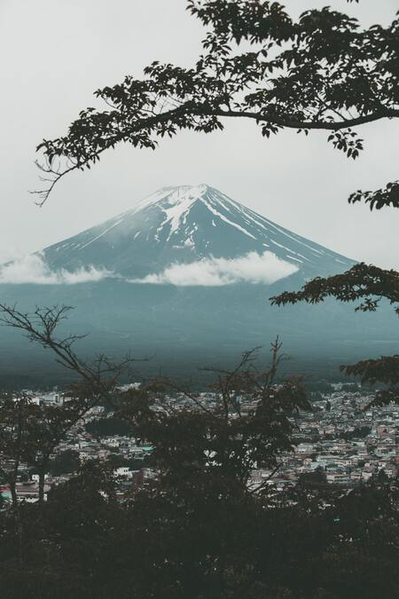
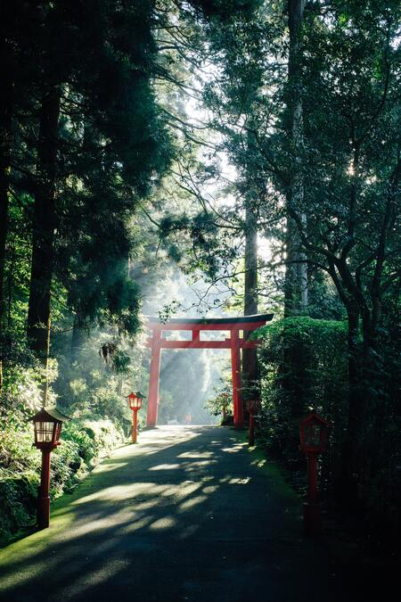

Mount Fuji

Fuji-Hakone-Izu National Park was created in 1936. This park, located in Japan, is home to the famous Mount Fuji, along with other stunning views.
Attractions
- Fuji Five Lakes, Lakes at the base of Mt. Fuji
- Hakone, Town home to beautiful views and hot springs
- Izu Islands, Volcanic Islands
Hakone

Hakone is a town that was built in the 5th century. Its population is around 13,000, but even though it is small, it has a lot of attractions.
The most popular attraction is the Hakone Shrine.